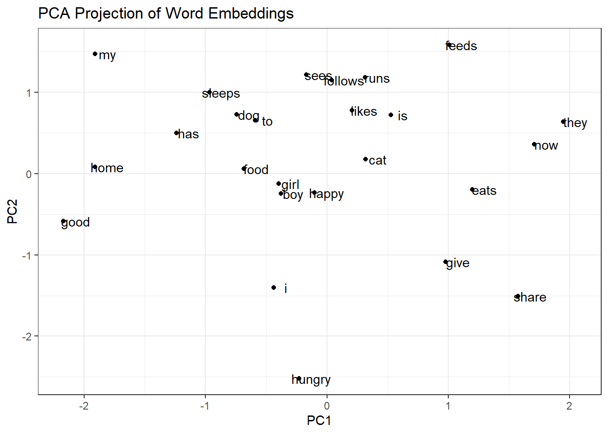

library(torch) # v0.13.0
library(R6) # v2.5.1Word2Vec skip-gram from scratch in R
NLP
torch
Introduction
Word2Vec models were first presented in the paper “Efficient Estimation of Word Representations in Vector Space” by Google team (Mikolov et al. 2013). They presented two model architectures:
Continuous Bag-of-Words Model aka CBOW, where given context words we predict target words
Continuous Skip-gram Model aka skip-gram, where given target words we predict context words.
The goal is to find numerical representation of raw data, in our case those will be text tokens. This numerical representation should be a collection of dense vectors in \(d\)-dimensional Euclidean space.
Since then embedding models have been widely used in the industry. For examples of use-cases we recommend an essay What are embeddings? by Vicki Boykis.
In this tutorial we’ll explore step-by-step how skip-gram model works accompanied by code in R language and a toy example.
We’ll use object-oriented approach with R6 interface (https://r6.r-lib.org/index.html). We’ll use torch library (https://torch.mlverse.org/) for automatic differentiation and GPU-accelerated matrix operations. As of February 2025, torch in R suuports CUDA v11.8. Below code was run on NVIDIA GeForce GTX 1650 Ti.
set_device = function() {
if (cuda_is_available()) {
device = torch_device("cuda")
cat("Using GPU (CUDA)\n")
} else {
device = torch_device("cpu")
cat("Using CPU\n")
}
}Skip-gram workflow
Input to our model is a sequence of \(n\) tokens \(\mathbf{x} = (x_1, x_2, \dots, x_n)\). We must also specify dimensionality \(d\) of a target embedding space. Thus a contructor to initialize our class is defined as follows.
initialize = function(tokens, embedding_dim) {
self$tokens = tokens
self$embedding_dim = embedding_dim
}Build vocabulary
Among \(n\) tokens there are \(m \leq n\) unique tokens. Let’s denote our vocabulary
\[ V = \left(v_1, v_2, \dots , v_m \right) \]
and the set of corresponding indices \(C = \lbrace 1, 2, \dots, m \rbrace\).
build_vocabulary = function() {
unique_tokens = unique(self$tokens)
token_ids = seq_along(unique_tokens)
self$vocabulary = setNames(token_ids, unique_tokens)
}Convert tokens to indices
We convert sequence of tokens \(\mathbf{x} = (x_1, x_2, \dots, x_n)\) to sequence of integers \(( m_1, m_2, \dots , m_n)\) where \(m_i \in C\) for \(i = 1, 2, \dots, n\).
convert_tokens_to_indices = function() {
self$token_indices = sapply(self$tokens, function(token) {
self$vocabulary[[token]]
})
}Initialize model weights
We need to initialize two matrices:
\(W_1\) of dimensionality \(m \times d\)
\(W_2\) of dimensionality \(d \times m\)
Matrix \(W_1\) encodes hidden state which eventually we’ll interpret as the word embeddings of our vocabulary \(V\).
initialize_weights = function() {
vocabulary_size = length(self$vocabulary)
self$W1 = torch_randn(
size = c(vocabulary_size, self$embedding_dim)
, requires_grad = TRUE
, dtype = torch_float32()
)
self$W2 = torch_randn(
size = c(self$embedding_dim, vocabulary_size)
, requires_grad = TRUE
, dtype = torch_float32()
)
}Train model
In this tutorial we’ll find optimal model weights via vanilla gradient descent. As an exercise we recommend to try out this code with more efficient optimizers, e.g. SGD or Adam. For survey of different optimizers check out this video: https://www.youtube.com/watch?v=MD2fYip6QsQ
In order to train our model we must specify 3 additional parameters:
\(l\) - window size for skip-gram method
number of epochs during the training
\(\eta\) - learning rate for gradient descent.
There will be 3 loops:
- Outer loop for each epoch.
- Then for each token \(x_i\), \(i =1,2,\dots, n\), we take the window \([x_{i-l}, \dots, x_{i-1}, x_i, x_{i+1}, \dots x_{i+l}]\). It gives us pairs of center words and context words \((x_i, x_j)\), \(j \in \lbrace i-l, \dots i-1, i+1, \dots i+l \rbrace\).
- For each pair \((x_i, x_j)\) we’ll perform forward pass, loss calculation and backpropagation.
for (epoch in seq_len(epochs)) {
total_loss = 0
# Loop over each token position as the center word
for (center_position in seq_along(self$tokens)) {
center_word = self$tokens[[center_position]]
center_index = self$vocabulary[[center_word]]
# Determine context window boundaries
start_position = max(1, center_position - window_size)
end_posisiton = min(length(self$tokens), center_position + window_size)
# For each context word
for (context_position in seq(start_position, end_posisiton)) {
# If center position is equal to context position then skip to the next iteration
if (context_position == center_position) next
context_word = self$tokens[[context_position]]
context_index = self$vocabulary[[context_word]]
# FORWARD PASS
# CALCULATE LOSS
# BACKPROPAGATION
}}}Forward pass
We project center word’s embedding \(\left( W_1 \right)_{i\cdot}\) (i.e. \(i\)-th row of matrix \(W_1\)) onto column space of the matrix \(W_2\). It gives us vector \(v_{ij}\) of length \(m\). We turn this vector into probabilities via softmax function
\[ p(v_{ij}) = \frac{\exp(v_{ij})}{\sum_{k=1}^m \exp(v_{ik})} \]
forward_pass = function(center_word_index) {
hidden_layer = self$W1[center_word_index, ]
output_layer = hidden_layer$matmul(self$W2)
return(output_layer)
}Loss calculation
Now for the pair \((x_i, x_j)\) we have a vector of probabilities \(p(v_{ij}) = (p_1, p_2, \dots , p_k)\). True label of the word \(x_j\) is one-hot vector \(y_j\) with \(1\) at \(j\)-th position and \(0\)’s elsewhere. Cross-entropy loss is then:
\[ L(y_j, p(v_{ij})) = - \sum_{k=1}^m (y_j)_k \log_2 p_k = -\log_2 p_j \]
Technical note. torch::nnf_cross_entropy() function takes 2 arguments:
input tensor of shape
(batch_size, size_of_vocabulary). Since we process each center word at a time, then in our casebatch_size = 1, so we applyunsqueeze()function on the vector \(v_{ij}\).target tensor containing index \(m_j \in \lbrace 1, 2, \dots, m \rbrace\) of our context word \(x_j\).
In the backend, torch::nnf_cross_entropy() applies softmax on the input tensor and one-hot encodes target tensor.
compute_cross_entropy(output_layer, context_word_index) {
y_hat = output_layer$unsqueeze(dim = 1)
y_true = torch_tensor(context_word_index, dtype = torch_long())
loss = nnf_cross_entropy(y_hat, y_true)
return(loss)
}Backpropagation
torch automatically calculates derivatives \(\nabla W_1\), \(\nabla W_2\) of the loss function \(L\) with respect to the model weights \(W_1\) and \(W_2\). Then we update matrices \(W_1\) and \(W_2\) in the direction of the steepest descent:
\[ W \leftarrow W - \eta \ \nabla W \]
update_weights = function(loss, learning_rate) {
loss$backward()
with_no_grad({
self$W1$sub_(learning_rate * self$W1$grad)
self$W2$sub_(learning_rate * self$W2$grad)
# Zero out gradients for next iteration
self$W1$grad$zero_()
self$W2$grad$zero_()
})
}Putting it all together into R6 interface
Word2Vec = R6::R6Class(
classname = "Word2Vec",
public = list(
# Attributes created during initialization
tokens = NULL,
embedding_dim = NULL,
# Attributes created during runtime
device = NULL,
vocabulary = NULL,
token_indices = NULL,
W1 = NULL,
W2 = NULL,
# Methods
initialize = function(tokens, embedding_dim) {
self$tokens = tokens
self$embedding_dim = embedding_dim
},
set_device = function() {
if (cuda_is_available()) {
device = torch_device("cuda")
cat("Using GPU (CUDA)\n")
} else {
device = torch_device("cpu")
cat("Using CPU\n")
}
},
build_vocabulary = function() {
unique_tokens = unique(self$tokens)
token_ids = seq_along(unique_tokens)
self$vocabulary = setNames(token_ids, unique_tokens)
},
convert_tokens_to_indices = function() {
self$token_indices = sapply(self$tokens, function(token) {
self$vocabulary[[token]]
})
},
initialize_weights = function() {
vocabulary_size = length(self$vocabulary)
self$W1 = torch_randn(
size = c(vocabulary_size, self$embedding_dim)
, requires_grad = TRUE
, dtype = torch_float32()
, device = self$device
)
self$W2 = torch_randn(
size = c(self$embedding_dim, vocabulary_size)
, requires_grad = TRUE
, dtype = torch_float32()
, device = self$device
)
},
forward_pass = function(center_word_index) {
hidden_layer = self$W1[center_word_index, ]
output_layer = hidden_layer$matmul(self$W2)
return(output_layer)
},
compute_cross_entropy = function(output_layer, context_word_index) {
y_hat = output_layer$unsqueeze(dim = 1)
y_true = torch_tensor(
context_word_index
, dtype = torch_long()
, device = self$device
)
loss = nnf_cross_entropy(y_hat, y_true)
return(loss)
},
update_weights = function(loss, learning_rate) {
loss$backward()
with_no_grad({
self$W1$sub_(learning_rate * self$W1$grad)
self$W2$sub_(learning_rate * self$W2$grad)
# Zero out gradients for next iteration
self$W1$grad$zero_()
self$W2$grad$zero_()
})
},
train_model = function(window_size, epochs, learning_rate) {
for (epoch in seq_len(epochs)) {
total_loss = 0
# Loop over each token position as the center word
for (center_position in seq_along(self$tokens)) {
center_word = self$tokens[[center_position]]
center_index = self$vocabulary[[center_word]]
# Determine context window boundaries
start_position = max(1, center_position - window_size)
end_posisiton = min(length(self$tokens), center_position + window_size)
# For each context word
for (context_position in seq(start_position, end_posisiton)) {
# If center position is equal to context position then skip to the next iteration
if (context_position == center_position) next
context_word = self$tokens[[context_position]]
context_index = self$vocabulary[[context_word]]
# Forward pass
output_layer = self$forward_pass(center_index)
# Compute loss
loss = self$compute_cross_entropy(output_layer, context_index)
total_loss = total_loss + as.numeric(loss$item())
# Update params
self$update_weights(loss, learning_rate)
}
}
cat(sprintf("Epoch %d/%d, Loss: %.4f\n", epoch, epochs, total_loss))
}
}
)
)Toy example
Let’s craft 20 sentences corpus on which we’ll train our model (corpus generated by GPT o1).
text_corpus = "My cat likes food. I give food to cat. Boy sees cat. Girl sees dog. Dog eats food. Cat sleeps now. Girl has cat. Boy feeds dog. Cat likes boy. Dog likes girl. Girl eats food. Boy runs home. Cat follows boy. Dog follows girl. Food is good. Cat is happy. Girl is happy. Boy is happy. Dog is hungry. They share food."We apply some preprocessing steps:
remove punctuation
convert text to lower-case
split into tokens, where each token represent a word.
prep_text = gsub("[[:punct:]]", "", tolower(text_corpus))
tokens = strsplit(prep_text, "\\s+") |> unlist()
table(tokens) |> as.data.frame() tokens Freq
1 boy 6
2 cat 8
3 dog 6
4 eats 2
5 feeds 1
6 follows 2
7 food 6
8 girl 6
9 give 1
10 good 1
11 happy 3
12 has 1
13 home 1
14 hungry 1
15 i 1
16 is 5
17 likes 3
18 my 1
19 now 1
20 runs 1
21 sees 2
22 share 1
23 sleeps 1
24 they 1
25 to 1It gave us:
\(n = 63\) - number of tokens
\(m=25\) - vocabulary size.
Now we train our model with \(d = 15\), \(l=1\), \(\eta = 0.1\) and \(50\) epochs.
# set seed for reproducibility
set.seed(1234)
torch_manual_seed(1234)
# Create the model
model = Word2Vec$new(tokens = tokens, embedding_dim = 15)
# Run the model
model$set_device()Using GPU (CUDA)model$build_vocabulary()
model$convert_tokens_to_indices()
model$initialize_weights()
# Train the model
window_size = 1 # each side
epochs = 50
learning_rate = 0.1
model$train_model(window_size, epochs, learning_rate)Epoch 1/50, Loss: 746.5261
Epoch 2/50, Loss: 447.8313
Epoch 3/50, Loss: 383.7912
Epoch 4/50, Loss: 356.2588
Epoch 5/50, Loss: 341.8935
Epoch 6/50, Loss: 333.6537
Epoch 7/50, Loss: 327.7783
Epoch 8/50, Loss: 323.0561
Epoch 9/50, Loss: 319.0751
Epoch 10/50, Loss: 315.6339
Epoch 11/50, Loss: 312.6157
Epoch 12/50, Loss: 309.9435
Epoch 13/50, Loss: 307.5606
Epoch 14/50, Loss: 305.4234
Epoch 15/50, Loss: 303.4967
Epoch 16/50, Loss: 301.7515
Epoch 17/50, Loss: 300.1642
Epoch 18/50, Loss: 298.7149
Epoch 19/50, Loss: 297.3869
Epoch 20/50, Loss: 296.1663
Epoch 21/50, Loss: 295.0409
Epoch 22/50, Loss: 294.0005
Epoch 23/50, Loss: 293.0363
Epoch 24/50, Loss: 292.1406
Epoch 25/50, Loss: 291.3069
Epoch 26/50, Loss: 290.5291
Epoch 27/50, Loss: 289.8023
Epoch 28/50, Loss: 289.1219
Epoch 29/50, Loss: 288.4839
Epoch 30/50, Loss: 287.8849
Epoch 31/50, Loss: 287.3216
Epoch 32/50, Loss: 286.7914
Epoch 33/50, Loss: 286.2917
Epoch 34/50, Loss: 285.8201
Epoch 35/50, Loss: 285.3748
Epoch 36/50, Loss: 284.9538
Epoch 37/50, Loss: 284.5555
Epoch 38/50, Loss: 284.1784
Epoch 39/50, Loss: 283.8211
Epoch 40/50, Loss: 283.4822
Epoch 41/50, Loss: 283.1607
Epoch 42/50, Loss: 282.8555
Epoch 43/50, Loss: 282.5656
Epoch 44/50, Loss: 282.2900
Epoch 45/50, Loss: 282.0279
Epoch 46/50, Loss: 281.7786
Epoch 47/50, Loss: 281.5412
Epoch 48/50, Loss: 281.3152
Epoch 49/50, Loss: 281.0998
Epoch 50/50, Loss: 280.8946PCA projection of embedding space
Our final word embeddings are rows of the matrix \(W_1\) of dimensionality \(25 \times 15\). We extract principal components of \(W_1\).
embedding_space = model$W1 |> as.matrix()
pca = prcomp(embedding_space, center = TRUE, scale. = TRUE)
summary(pca)Importance of components:
PC1 PC2 PC3 PC4 PC5 PC6 PC7
Standard deviation 1.8047 1.5357 1.4169 1.18798 1.12567 1.01621 0.95311
Proportion of Variance 0.2171 0.1572 0.1338 0.09409 0.08448 0.06885 0.06056
Cumulative Proportion 0.2171 0.3743 0.5082 0.60228 0.68675 0.75560 0.81616
PC8 PC9 PC10 PC11 PC12 PC13 PC14
Standard deviation 0.82368 0.72397 0.68359 0.65974 0.50026 0.46220 0.37462
Proportion of Variance 0.04523 0.03494 0.03115 0.02902 0.01668 0.01424 0.00936
Cumulative Proportion 0.86139 0.89633 0.92748 0.95650 0.97318 0.98743 0.99678
PC15
Standard deviation 0.21970
Proportion of Variance 0.00322
Cumulative Proportion 1.00000Let’s project embedding space into first two principal components which together explain \(37.43\%\) of total variance.
library(ggplot2) # v3.5.1
pca_projection = embedding_space %*% pca$rotation[, 1:2]
rownames(pca_projection) = names(model$vocabulary)
ggplot(data.frame(pca_projection), aes(x = PC1, y = PC2)) +
geom_point() +
geom_text(aes(label = rownames(pca_projection)), nudge_x = 0.1) +
theme_bw() +
labs(title = "PCA Projection of Word Embeddings")
As we can see, “similar” words are close each other:
nouns boy and girl
verbs sees, follows, runs, and likes
However dog and cat are far apart. We might retrain the model with larger corpora, bigger embedding space, wider context window, more epochs, more robust optimizer (vanilla GD could be stuck in local minima). Altough words dog and sleeps, which are semantically related in case of my Labrador, are close each other.
Futher steps
In practice, with huge vocabularies and enormous corpora, calculating denominator in the softmax function is quite expensive. To avoid that we use skip-gram with negative sampling aka SGNC, where having a pair (center word, context word) we pick randomly few context words as negative samples and fit binary logistic regression. For more details we refer to the chapter 6.8 of the book Speech and Language Processing by Daniel Jurafsky and James Martin.
Thinking exercises
In fact, for each word \(v_i\) from the vocabulary \(V\) we have two word embeddings:
- \(i\)-th row of the matrix \(W_1\) where \(v_i\) served as a center word
- \(i\)-th column of the matrix \(W_2\) where \(v_i\) served as a context word.
Do we get better word representation if combine (e.g. average) both vectors?
Softmax function has time complexity \(\mathcal{O}(n)\). Replace it with hierarchical softmax which has time complexity \(\mathcal{O} (\log n )\).
References
- Mikolov T. et al., Efficient Estimation of Word Representations in Vector Space, 2013, https://arxiv.org/abs/1301.3781
- Boykis V., What are embeddings?, https://vickiboykis.com/what_are_embeddings/
- Chang W (2022). R6: Encapsulated Classes with Reference Semantics. https://r6.r-lib.org, https://github.com/r-lib/R6/.
- https://torch.mlverse.org/
- Kundu S., Who’s Adam and What’s He Optimizing?, 2024, https://www.youtube.com/watch?v=MD2fYip6QsQ
- Jurafsky D., Martin J. H., Speech and Language Processing, 2024, https://web.stanford.edu/~jurafsky/slp3/